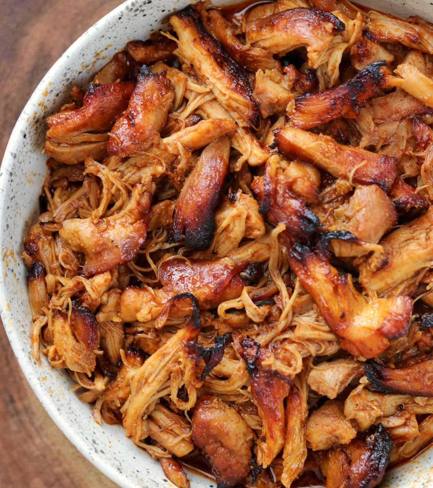

INSTANT BBQ CHICKEN

If you’re a fan of shredded chicken, this is a must try recipe.
It calls for chicken thighs so every bite is ultra tender, and I have a ton of recipes to make with it like nachos, sliders, stuffed sweet potatoes, and BBQ chicken mac and cheese.
Ingredients
- 2 lbs Boneless Skinless Chicken Thighs
- 2 Tbsp (32g) Olive Oil
- 1 Tbsp Brown Sugar
- 2 tsp Smoked Paprika
- 1 tsp Garlic Powder
- 1 tsp Cumin
- 1 tsp Kosher Salt
- 1 tsp Dry Mustard
- 1 tsp Chili Powder (optional)
- 1/2 tsp Black Pepper
- 1/2 C (140g) BBQ Sauce of Your Choice
Steps
- Mix the dry ingredients in a bowl. Coat the chicken in the oil in a large bowl before adding the bbq seasoning blend. Stir to coat.
- Set a pressure cooker's sauté function to high. Once hot, add the chicken and cook for 2-3 minutes before flipping and cooking an additional 2-3 minutes.
- Add the bbq sauce and move the chicken around to get some sauce to the bottom of the pot. Seal and pressure cook for 5 minutes* on high with quick release pressure.
- Transfer the cooked chicken to a bowl to shred before going back in the sauce.
- Optional for Instant Pot Duo Crisp: Use the broil function for 8-12 minutes or broil on a baking sheet in the oven for crispy edges
taken from: 25 High Protein Meal Prep Recipes(Author Mason Woodruff)